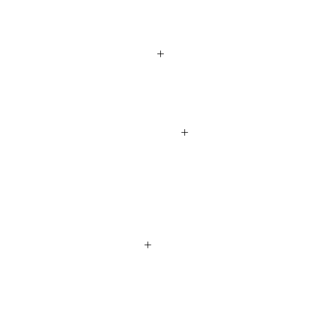
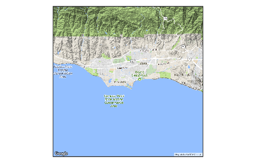
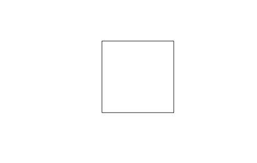
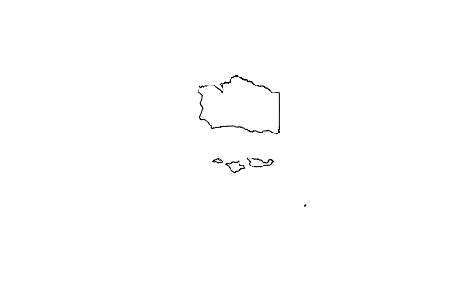

The HydroData object
All HydroData find and get functions return a object of class HydroData. This page covers the key components of this class which, at its core, is a list of features related to the query that defined the object.
All objects range is size from 4 to 8 elements:
Features
- AOI Description (default)
- Source of data (default)
- Project (if spatial) (default)
Data (default)
- Basemaps (optional)
- AOI shapefile (optional)
- Fiat boundary shapefile (optional)
IDs of critical station information (optional)
Getting a HydroData Object
In this basic example we will query a HydroData object containing all USGS stations in a 100 square mile region centered on UCSB. If you have not yet learned how AOI queries are defined in HydroData I sugest reviewing the AOI page first.
usgs = findUSGS(clip_unit = list("UCSB", 10, 10), basemap = T, boundary = T, ids = T)## AOI defined as a 10 mile tall by 10 mile wide region centered on (the) UCSB## 3 USGS gages found within AOI## AOI defined as a 10 mile tall by 10 mile wide region centered on (the) 34.41/-119.85 (lat/lon)## Returned list includes: USGS NWIS shapefile, terrain basemap, AOI boundary, fiat boundary, and list of station IDsName
The first element of a HydroData object is a text string in plain english describing the location of the AOI.
usgs$name## [1] "A 10 mile tall by 10 mile wide region centered on (the) UCSB"Source
The second element is a text string detailing the source of the data contained in the object.
usgs$source## [1] "USGS NWIS"Projection
The third element is the projection of the HydroData object, if it is spatial.
usgs$proj## CRS arguments:
## +proj=longlat +ellps=GRS80 +towgs84=0,0,0,0,0,0,0+no_defsData
The fourth element is the actual data queried. This data can be a data.frame, sp, or raster object.
usgs$nwis## class : SpatialPointsDataFrame
## features : 3
## extent : -119.8118, -119.8037, 34.42472, 34.45916 (xmin, xmax, ymin, ymax)
## coord. ref. : +proj=longlat +ellps=GRS80 +towgs84=0,0,0,0,0,0,0+no_defs
## variables : 7
## names : OBJECTID, feature_id, site_no, site_name, da_sqkm, lat_reachCent, lon_reachCent
## min values : 1474, 17595429, 11119940, ATASCADERO C NR GOLETA CA, 5.51, 34.42472, -119.8037
## max values : 1476, 17596111, 11120500, SAN JOSE C NR GOLETA CA, 18.90, 34.45916, -119.8118plot(usgs$nwis)
Basemaps
plot(usgs$basemap)
IDs
usgs$ids## [1] "17596109" "17595429" "17596111"AOI shapefile
plot(usgs$boundary)
Intersecting Fiat Boundary
plot(usgs$fiat)
Overall
str(usgs, max = 1)## List of 8
## $ name : chr "A 10 mile tall by 10 mile wide region centered on (the) UCSB"
## $ source : chr "USGS NWIS"
## $ proj :Formal class 'CRS' [package "sp"] with 1 slot
## $ nwis :Formal class 'SpatialPointsDataFrame' [package "sp"] with 5 slots
## $ basemap :Formal class 'RasterLayer' [package "raster"] with 12 slots
## $ boundary:Formal class 'SpatialPolygons' [package "sp"] with 4 slots
## $ fiat :Formal class 'SpatialPolygonsDataFrame' [package "sp"] with 5 slots
## $ ids : chr [1:3] "17596109" "17595429" "17596111"
## - attr(*, "class")= chr "HydroData"